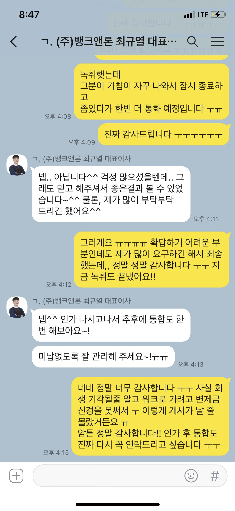

[개인회생자대출] 개시 대출 500 후기 / 최규열이사님 정말 감사합니다
직장인 / 4대보험가입 유 / 1년 5개월 재직 중 / 월급여 190-200
신용등급: 6월 중순 회생 개시 상태
채무내역: 회생 후 사건번호 200 대출 있음
필요서류: 초본, 신분증앞면 사본,
입금계좌 사본, 건강보험득실확인서 및
건강보험납부확인서,
급여통장 입출금 3개월 내역,
재직확인 전화 대신 재직증명서 제출
채권자 목록 및 변제계획안, 변제예정액표,
변제금납입내역서(신한은행 가서 발급) << 당일 입금, 당일 발급 가능
회생을 접수하긴 했으나,
잘 모르는 저에게 법률사무소에서는
채무가 재산보다 살짝 높아 기각될 것 같다면서
회생을 끌고 가다가 워크로 넘어가라고 해서
그러는게 나은줄만 알았습니다.
그런데 갑자기 개시 상태,
법률사무소에서는 변제금 모아두라는 말도 없이
변제금액과 회생 계좌 보내주시고
집회 일자 알려주더라구요 ㅠ
좌절.. 왜냐면 3년간 월급의 반 이상이 매월 변제금,
4회 납부 후 집회 가라는데 1회분도 납부 못하는 상태.
지지난주 연락드렸을때,
이전 사건번호 대출때의 직원분이 없어서
이사님께서 대신 상담해주셨거든요.
결론은 1회 납부도 못해서 부결.
2주 뒤 2회 납부 가능하나, 제 돈이 아니기에
바로 대출 받으면 넣어야 한다고 말씀드렸습니다.
그렇게 하면 그땐 가능할 것 같다고 하시더라구요.
가능할 것 같은거도 안되고, 저는 제 돈이 아니기에
꼭 가능해야 했어요. 집회 전에 4회 납부인지라
원하는 금액 또한 총 500 이였습니다.
저도 검색 엄청 해봐서 알아요.
개시 대출 500은 본 적이 없던 것 같아요.
있어도 다들 미납 없는 상태인듯 한데,
저는 2회 납부한다 해도 2회가 미납인 상황.
이사님께서 해당 대출 회사 심사 직원분도 아닌데
어떻게 500 가능하다고 장담하실 수 있겠어요,,
그걸 알면서도 저는 꼭 확답을 요구하는 것만 같아서
계속 죄송했습니다 ㅜ
심지어 주말 밤에 카톡 남겨두면,
월요일 오전에 보시고 가장 빠르게 상담해주시겠지,,
이 생각을 하고 보낸 카톡,,
본의 아니게 실례를 범했네요.
밤낮없이 상담해주셔서 감사하고, 죄송했습니다.
그래도 이해해주시고, 답답한 저에게 티 하나 안내고
친절하게 안내해주셔서 정말 감사했구요 ㅠ
암튼 결론 500 대출 받아서
나머지 2회 납부 조건으로 미납 없이 해결했습니다.
대출 카페 여러 있지만, 정말 각각의 재량같아요.
다른데선 안되는 것이 뱅크앤론에서는 되네요.
부끄러운 이야기 어디가서 하겠습니까,
이번에 제대로 도움 받아서 저같이 잠 못자고
검색하시는 분들께 공유하고 싶었습니다.
정말 감사합니다.
잘 갚을거에요. 비록 이번에 이렇게 회생은 하지만,
제 인생에 연체는 없었거든요..
